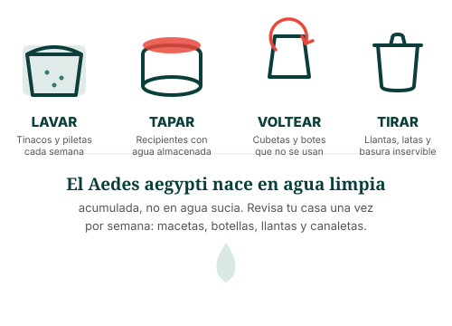

Para ti y tu familia
Lo que debes saber sobre el dengue
El dengue se previene en casa, se reconoce por sus síntomas y, en la mayoría de los casos, se trata con reposo e hidratación. Aquí encontrarás información clara, sin tecnicismos.
¿Qué es?
Una enfermedad transmitida por la picadura de un mosquito
El dengue es una enfermedad viral transmitida principalmente por la picadura de la hembra del mosquito Aedes aegypti, que pica sobre todo durante el día (al amanecer y al atardecer). No se transmite de persona a persona por contacto directo, ni por toser o estar cerca de alguien enfermo.
Existen cuatro tipos del virus (serotipos DENV-1 a DENV-4). Esto significa que una persona puede enfermar de dengue más de una vez en su vida, y las reinfecciones pueden ser más delicadas que la primera infección.

Síntomas habituales
¿Cómo se siente el dengue?
Los síntomas suelen aparecer entre 4 y 10 días después de la picadura, y duran de 2 a 7 días. La mayoría de las personas se recupera sin complicaciones con reposo, líquidos abundantes y paracetamol.
Esto es importante
Signos de alarma: cuándo acudir de inmediato
La mayoría de los casos de dengue son leves, pero en un pequeño porcentaje la enfermedad puede agravarse, generalmente entre las 24 y 48 horas después de que la fiebre baja. Si la persona presenta cualquiera de los siguientes signos, debe acudir de inmediato a un servicio de salud:

La mejor estrategia
Prevención: rompe el ciclo en tu propio hogar
El mosquito Aedes aegypti se reproduce en agua limpia y estancada acumulada en recipientes alrededor de la casa. Eliminar esos criaderos es la medida de prevención más eficaz, según los lineamientos de promoción de la salud (PRONAM) y CENAPRECE.

🧴 Protección personal
Usa repelente de mosquitos en piel expuesta, ropa de manga larga y pantalón largo, sobre todo al amanecer y al atardecer.
🪟 En casa
Coloca mosquiteros en puertas y ventanas. Si usas pabellones para dormir, revisa que no tengan agujeros.
🏘️ En tu comunidad
Participa en las jornadas de descacharrización y avisa a tu centro de salud si detectas muchos mosquitos en tu colonia.
Si ya tienes dengue leve
¿Qué hacer en casa mientras te recuperas?
- Hidrátate constantemente: agua, suero oral o agua de coco, en pequeñas cantidades y con frecuencia.
- Usa solo paracetamol para la fiebre y el dolor. Nunca tomes aspirina, ibuprofeno ni otros antiinflamatorios (AINEs), ya que pueden aumentar el riesgo de sangrado.
- Descansa todo lo posible y evita esfuerzos físicos.
- Vigila los signos de alarma todos los días, incluso cuando la fiebre empiece a bajar.
- Evita la automedicación con cualquier otro fármaco sin indicación médica.
¿Quieres profundizar más?
Consulta el mapa mental del dengue o revisa la infografía y el video explicativo.